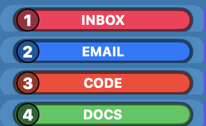
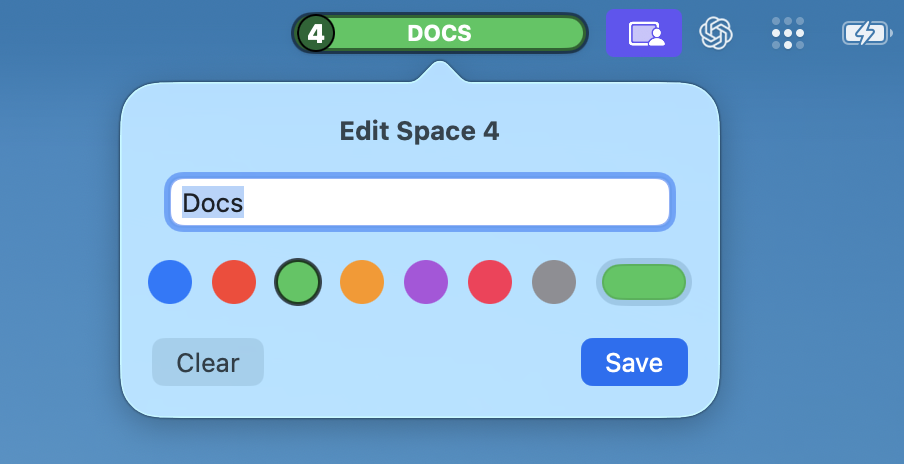
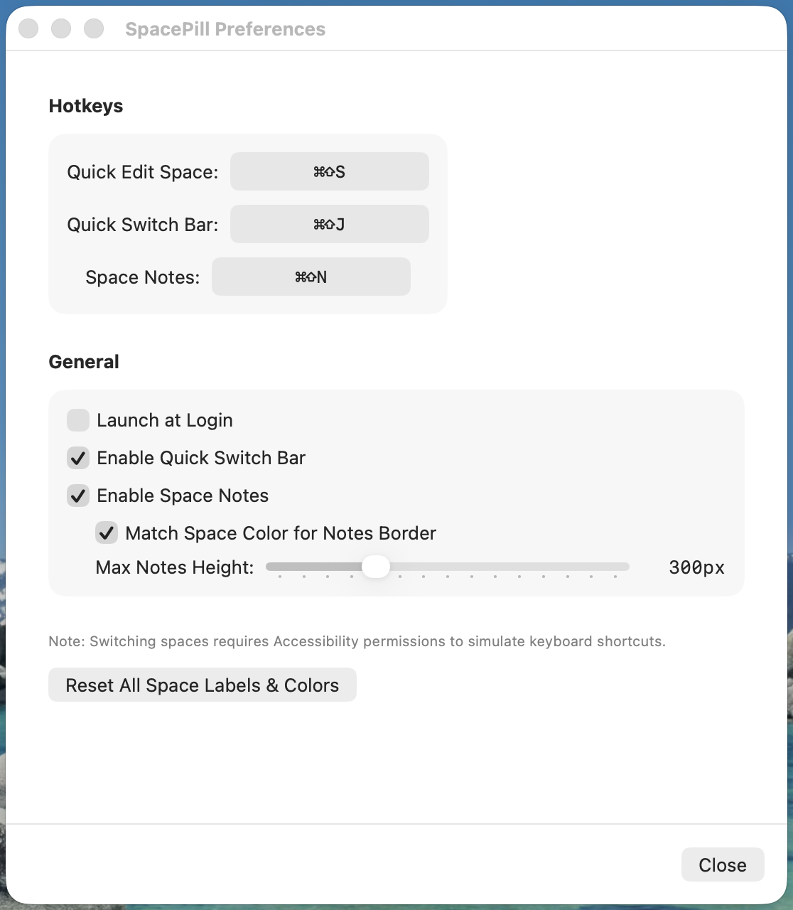

Six surfaces, in the order you'll meet them: the pill, labelling a Space, jumping to
one, the notes panel, Preferences, and the System Settings screen the Setup window
points you to.
1 The pill
Where you are, without opening anything.
The colour-coded pill in the menu bar
The badge is the Space's position across all displays; the text is the label you
gave it. The whole capsule takes the colour you assigned, and the badge is a
darker shade of it, so it reads clearly against both light and dark menu bars.

One colour per Space
Seven presets are built in, plus the full system colour picker. A Space you have
not configured shows a neutral pill with just its number — SpacePill never
invents a label for you.
Jump by name
Open the switcher with ⌘⇧J and type
part of a Space's label — it fuzzy-matches, so dcs finds
Docs. Press ⏎ and the pill changes to match. The pill
also updates on its own whenever you switch Spaces any other way.
2 Quick Edit
⌘⇧S — name and colour the Space
you're on.

Rename and recolour a Space
A text field, seven preset swatches, and the system colour picker for anything
else. ⏎ saves, ⌫ clears. Open it on an
unconfigured Space and SpacePill pre-selects the first preset colour no other
Space is using, so a run of new Spaces ends up visually distinct on its own.
Labels and colours are stored against the Space's stable UUID, so they survive
reordering in Mission Control.
3 Quick Switch
⌘⇧J — jump to a Space by typing part
of its name.
Every Space, searchable
Filter by label or by exact number, move with ↑↓, jump with ⏎, dismiss with esc.
The list spans every display.
Honest about what it can't reach
Rows SpacePill genuinely cannot jump to are dimmed, marked with a no-entry
symbol, and refuse to activate — either because that Desktop's
“Switch to Desktop N” shortcut isn't enabled, or because it sits
past Desktop 10, which macOS defines no shortcut for at all. The footer
names the exact reason for the selected row.
How to fix the first case →
4 Space Notes
⌘⇧N — a Markdown scratchpad that
belongs to this Space.
Notes that follow the Space
Headings, bold, italics, inline code, fenced blocks and list markers are
highlighted as you type, and pressing ⏎ inside a list continues
it automatically. The panel saves continuously, remembers its scroll position per
Space, grows with your content up to the height you set, and reappears only on
the Spaces where you left it open. Its border can take the Space's colour so you
always know whose notes you're reading.
5 Preferences
Right-click the pill → Preferences…

All three hotkeys are rebindable
Click a field and press the combination you want. Note that
Quick Switch and Space Notes ship switched off — their hotkeys
are not registered until you tick them here, and their hotkey rows only appear
once you do. If no “Switch to Desktop” shortcut is enabled in macOS,
this window also shows a reminder with a button that opens the right System
Settings pane.
6 The keyboard shortcuts that power switching
macOS has no API for changing Spaces, so SpacePill replays your own
Switch to Desktop N shortcuts. They live in Keyboard
Shortcuts, and SpacePill's Setup window helps you turn them on if any are off.
How switching works →
System Settings → Keyboard → Keyboard Shortcuts → Mission Control
Tick Switch to Desktop 1, Switch to Desktop 2 and so
on — one for every Desktop you want to be able to jump to. The default binding is
⌃ plus the number, but SpacePill reads whatever you actually
bound, so rebinding is fine. macOS only defines these for Desktops 1–10;
there is no eleventh, which is why Spaces past the tenth are unreachable.